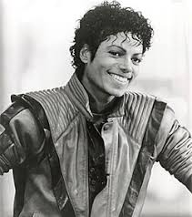

Conosciuto anche come The King of Pop (Il Re del Pop), è ritenuto uno degli artisti più influenti della popular music in virtù dei suoi contributi nel mondo della musica, della danza, della moda e dello spettacolo. Con le sue performance dal vivo e i suoi videoclip ha reso popolari tecniche di danza come il moonwalk, il toe stand, l'anti-gravity lean e la robot dance, arrivando in tal modo ad essere annoverato tra i ballerini più influenti di tutti i tempi.

Nel 1982 ha pubblicato Thriller, che risulta essere l'album più venduto di sempre, con vendite stimate che vanno dai 70 ai 100 milioni di copie a livello globale, delle quali 34 milioni nei soli Stati Uniti, rendendolo l'album in studio più venduto nel Paese. Altri dei suoi progetti discografici, tra cui Off the Wall, Bad, Dangerous e HIStory sono anch'essi catalogati tra gli album più venduti di sempre. La vendita stimata di tutti i suoi album e singoli si aggira intorno al miliardo di copie a livello internazionale secondo il Guinness dei primati, il che lo rende l'artista solista di maggior successo discografico nella storia della musica.